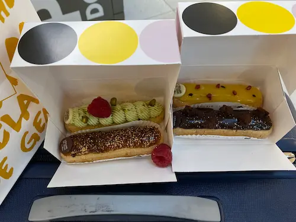

I have two favorite cities, Paris and my home town, Cedar City, UT
I will talk about Paris. Beautiful city with lovely people. I have been
many times as I at one time in my life dated a french girl in France. Love the
architecture, the history, and the food, especially the desserts.
Me near the eiffel tower
Eclairs purchased in Paris
